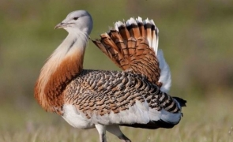

Biodiversitatea in Campia Baraganului
Ce intelegem prin termenul de biodiversitate?
"Biodiversitate” înseamnă variabilitatea organismelor vii din toate sursele, inclusiv, printre altele, a ecosistemelor terestre, marine şi a altor ecosisteme acvatice şi a complexelor ecologice din care acestea fac parte; aceasta include diversitatea în cadrul speciilor, dintre specii si a ecosistemelor.
Resursele biologice includ resurse genetice, organisme sau părţi din ele, populaţii sau orice alte componente biotice ale ecosistemelor având folosinţă sau valoare efectivă sau potenţială pentru umanitate.
Conservarea, protecţia şi îmbunătăţirea calităţii mediului, inclusiv conservarea habitatelor naturale şi a speciilor de faună şi floră sălbatică, sunt obiective comunitare esenţiale şi de interes general.
Pentru a menţine sau a restaura habitatele naturale sau speciile sălbatice de interes comunitar la un stadiu corespunzător de conservare, sunt desemnate siturile Natura 2000, astfel încât să se creeze o reţea ecologică europeană coerentă - Reteaua Natura 2000 - instrumentul principal al Uniunii Europene de conservare a naturii.
Fauna

Dropia